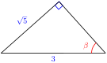
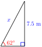
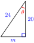
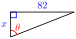
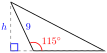

With the Pythagorean theorem we can find one side of a right triangle if we know the other two sides. By using what we know about similar triangles, we can find the unknown sides of a right triangle if we know only one side and one of the acute angles.
\(\blert{\text{We can find side}~ b~ \text{with the Pythagorean theorem.}}\)
\(\blert{\text{Can we find side} ~b \text{?}}\)
SubsectionThe Sine of an Angle
In Example 2 of Section 1.2, we saw that in a 30-60-90 right triangle, the ratio of the shortest side to the hypotenuse was \(\frac{1}{2}\text{,}\) or 0.5. This ratio is the same for any two right triangles with a \(30\degree\) angle, because they are similar triangles, as shown at right.
The ratio is given a name; it is called the "sine of \(30\degree\text{.}\)" We write
where sin is an abbreviation for sine. There is nothing special about \(30\degree\) angles; we can talk about the sine of any angle. The sine of an angle is the ratio of the side opposite the angle to the hypotenuse.
Note2.11.
Recall that we use the notation \(f(x)\) to indicate a function of an input variable, \(x\text{.}\) In fact, the sine ratio is a function of the angle, so we use parentheses around the angle input to refer to its sine, like this: \(\sin (\theta)\text{.}\)
Find the sine of the labeled angle in each triangle below.

Solution.
The side opposite angle \(\phi\) is 5, and the hypotenuse is 13, so the sine of \(\phi\) is
\begin{equation*}
\sin (\phi) =\dfrac{5}{13}, \text{ or approximately}~~ 0.3846
\end{equation*}
The side opposite angle \(\beta\) is \(\sqrt{5}\text{,}\) and the hypotenuse is 3, so the sine of \(\beta\) is
\begin{equation*}
\sin (\beta) =\dfrac{\sqrt{5}}{3}, \text{ or approximately}~~ 0.7454
\end{equation*}
Checkpoint2.14.
Find the sine of the labeled angle in the triangle at right. Round your answer to 4 decimal places.
Answer.
\(0.7442\)
Caution2.15.
We must use the sides of a right triangle to calculate the sine of an angle. For example, in the triangle at right, \(\sin (\theta)=\frac{4}{7}\text{,}\) because \(\triangle ABC\) is a right triangle.
It is not true that \(\sin (\theta)=\frac{5}{7}\text{,}\) or \(\sin (\theta)=\frac{6}{7}\text{.}\) In this chapter, we consider only right triangles.
SubsectionUsing a Calculator
Mathematicians have calculated the sines of any angle we like. The values of the sine were originally collected into tables, and are now available on scientific calculators. For example, let’s find the sine of \(50\degree\text{.}\) First, consider some triangles, as shown below.
\(\blert{\text{Which angle has the larger sine,}~ 30\degree~ \text{or}~ 50\degree ?}\)
Do you expect the sine of \(50\degree\) to be larger or smaller than the sine of \(30\degree\text{?}\) Do you expect the sine of \(50\degree\) to be larger or smaller than 1?
Example2.16.
Use your calculator to find the sine of \(50\degree\) by entering SIN\((50)\text{.}\) (Make sure your calculator is set for degrees.) You should find that
This is not an exact value; the sine of \(50\degree\) is an irrational number, and your calculator shows as many digits as its display will allow. (Not all sine values are as “nice†as the sine of \(30\degree\text{!}\)) Usually we round to four decimal places, so we write
with an open parenthesis, as the prompt to enter an angle, because the sine is a function of the angle.
You can think of the notation sin as an operation symbol telling you to find the sine of an angle, just as the symbol \(\sqrt{~~} \) tells you to take the square root of the expression under the radical.
Checkpoint2.18.
Use your calculator to complete the table, rounding your answers to four decimal places.
\(\theta\)
\(~~0 \degree\)
\(~10 \degree\)
\(~20 \degree\)
\(~30 \degree\)
\(~40 \degree\)
\(~50 \degree\)
\(~60 \degree\)
\(~70 \degree\)
\(~80 \degree\)
\(~90 \degree\)
\(\sin (\theta)\)
\(~~~\)
\(~~~\)
\(~~~\)
\(~~~\)
\(~~~\)
\(~~~\)
\(~~~\)
\(~~~\)
\(~~~\)
\(~~~\)
What do you notice about the values of \(\sin (\theta)\) as \(\theta\) increases from \(0 \degree\) to \(90 \degree\text{?}\) If you plot the values of \(\sin (\theta)\) against the values of \(\theta\text{,}\) will the graph be a straight line? Why or why not?
Answer.
\(\small \theta\)
\(\small 0 \degree\)
\(\small 10 \degree\)
\(\small 20 \degree\)
\(\small 30 \degree\)
\(\small 40 \degree\)
\(\small 50 \degree\)
\(\small 60 \degree\)
\(\small 70 \degree\)
\(\small 0 \degree\)
\(\small 90 \degree\)
\(\small \sin (\theta)\)
\(~~0\)
\(\small 0.1737\)
\(\small 0.3420\)
\(\small 0.5\)
\(\small 0.6428\)
\(\small 0.7660\)
\(\small 0.8660\)
\(\small 0.9397\)
\(\small 0.9848\)
\(~~1\)
The values of \(\sin (\theta)\) increase from 0 to 1 as \(\theta\) increases from \(0\degree\) to \(90\degree\text{.}\) The graph will not be a straight line because the slopes between successive points are not constant.
Note2.19.
The important thing to remember is that the sine of an angle, say \(50 \degree\text{,}\) is the same for any right triangle with a \(50 \degree\) angle, no matter what the size or orientation of the triangle.
The figure below shows three different right triangles with a \(50 \degree\) angle. Although the sides of the triangle may be bigger or smaller, the ratio\(\dfrac {\text{opposite}}{\text{hypotenuse}}\) is always the same for that angle, because the triangles are similar. This is why the sine ratio is useful.
\(\blert{\text{In each triangle, the ratio}~ \sin (50\degree)=\dfrac{\text{opposite}}{\text{hypotenuse}}=0.7660} \)
SubsectionUsing the Sine Ratio to Find an Unknown Side
In the next example we see how to use the sine ratio to find an unknown side in a right triangle, knowing only one other side and one angle.
Example2.20.
Find the length of the side opposite the \(50 \degree\) angle in the triangle shown.
Solution.
In this triangle, the ratio \(\dfrac {\text{opposite}}{\text{hypotenuse}}\) is equal to the sine of \(50 \degree\text{,}\) or
We use a calculator to find an approximate value for the sine of \(50 \degree\text{,}\) filling in the lengths of the hypotenuse and the opposite side to get
\begin{equation*}
x = 18(0.7660)=13.788
\end{equation*}
To two decimal places, the length of the opposite side is 13.79 centimeters.
Caution2.21.
In the previous example, even though we showed only four places in \(\sin (50\degree)\text{,}\) you should not round off intermediate steps in a calculation, because the answer loses accuracy with each rounding. You can use the following keystrokes on your calculator to avoid entering a long approximation for \(\sin (50\degree)\text{:}\)
Find the length of the hypotenuse in the triangle shown.

Answer.
8.5 m
SubsectionThe Cosine and the Tangent
There are two more trigonometric ratios used for calculating the sides of right triangles, depending on which of the three sides is known and which are unknown. These ratios are called the cosine and the tangent.
Suppose we’d like to find the height of a tall cliff without actually climbing it. We can measure the distance to the base of the cliff, and we can use a surveying tool called a theodolite to measure the angle between the ground and our line of sight to the top of the cliff (this is called the angle of elevation).
These values give us two parts of a right triangle, as shown at right. The height we want is the side opposite the angle of elevation. The distance to the base of the cliff is the length of the side adjacent to the angle of elevation.
The ratio of the side opposite an angle to the side adjacent to the angle is called the tangent of the angle. The abbreviation for “tangent of theta†is tan (\(\theta\)).
Just like the sine of an angle, the tangent ratio is always the same for a given angle, no matter what size triangle it occurs in. And just like \(\sin (\theta)\text{,}\) we can find the values of \(\tan (\theta)\) on a scientific calculator.
Example2.24.
Use your calculator to find the tangent of \(58 \degree\text{.}\)
Find the height of the cliff if the angle of elevation to the top of the cliff is \(58 \degree\) at a distance of 300 feet from the base of the cliff.
Solution.
Enter TAN (58) to find \(\tan (58\degree) = 1.6003\text{,}\) rounded to four decimal places.
We use the tangent ratio to write an equation. In this triangle, the angle is \(58 \degree\text{.}\)
\begin{equation*}
h = 300(1,6003) = 480.0
\end{equation*}
so the height of the cliff is about 480 feet.
Checkpoint2.25.
Use the tangent ratio to find \(x\) in the triangle shown.
Use the sine ratio to find the hypotenuse, \(c\text{,}\) of the triangle.
Use the Pythagorean theorem to find the hypotenuse of the triangle. Do you get the same answer with both methods? Can you explain why the calculations might give (slightly) different answers?
Answer.
\(x = 23\) ft
\(c = 55\) ft
The answers agree when rounded to units. Rounding during calculation can cause the results to differ.
The third trigonometric ratio, called the cosine, is the ratio of the side adjacent to an angle and the hypotenuse of the triangle.
Use your calculator to complete the table. Round the values of sine and cosine to four decimal places.
\(\theta\)
\(~~0 \degree\)
\(~10 \degree\)
\(~20 \degree\)
\(~30 \degree\)
\(~40 \degree\)
\(~50 \degree\)
\(~60 \degree\)
\(~70 \degree\)
\(~80 \degree\)
\(~90 \degree\)
\(\sin (\theta)\)
\(\hphantom{0000}\)
\(\hphantom{0000}\)
\(\hphantom{0000}\)
\(\hphantom{0000}\)
\(\hphantom{0000}\)
\(\hphantom{0000}\)
\(\hphantom{0000}\)
\(\hphantom{0000}\)
\(\hphantom{0000}\)
\(\hphantom{0000}\)
\(\cos (\theta)\)
\(~~~\)
\(~~~\)
\(~~~\)
\(~~~\)
\(~~~\)
\(~~~\)
\(~~~\)
\(~~~\)
\(~~~\)
\(~~~\)
What do you notice about the values of sine and cosine? Can you explain why this is true? (Hint: If one (non-right) angle of a right triangle measures \(x\) degrees, how big is the other angle?)
Sketch a right triangle and label the opposite and adjacent sides for each (non-right) angle.
Note2.28.
In the Activity, you should also notice that as the angle \(\theta\) increases, \(\sin (\theta)\) increases but \(\cos (\theta)\) decreases.
You can see why this is true in the figure below. In each right triangle, the hypotenuse has the same length. But as the angle increases, the opposite side gets longer and the adjacent side gets shorter.
SubsectionThe Three Trigonometric Ratios
Here is a summary of the three trigonometric ratios we have discussed.
Trigonometric Ratios.
If \(\theta\) is one of the angles in a right triangle,
These three definitions are the foundation for all the rest of trigonometry. You should internalize them immediately!!
We must also be careful to apply these definitions of the trigonometric ratios only to right triangles. In the next example, we create a right triangle by drawing an extra line.
Example2.29.
The vertex angle of an isosceles triangle is \(34 \degree\text{,}\) and the equal sides are 16 meters long. Find the altitude of the triangle.
Solution.
The triangle described is not a right triangle. However, the altitude of an isosceles triangle bisects the vertex angle and divides the triangle into two congruent right triangles, as shown in the figure. The 16-meter side becomes the hypotenuse of the right triangle, and the altitude, \(h\text{,}\) of original triangle is the side adjacent to the \(17\degree\) angle.
Which of the three trig ratios is helpful in this problem? The cosine is the ratio that relates the hypotenuse and the adjacent side, so we’ll begin with the equation
The trigonometric ratio of an angle \(\theta\) is the same for every right triangle containing the angle.
SubsubsectionStudy Questions
Sketch a figure that illustrates why \(\cos (25\degree)\) is the same for every right triangle with a \(25\degree\) angle.
Sketch a figure that illustrates why \(\cos (\theta)\) decreases as \(\theta\) increases from \(0\degree\) to \(90\degree\text{.}\)
Which trigonometric ratio would you use to find the hypotenuse of a right triangle if you knew one acute angle and the side opposite that angle?
Does your calculator give you the exact decimal values for the trigonometric ratios of acute angles?
SubsubsectionSkills
Practice each skill in the Homework Problems listed.
Use measurements to calculate the trigonometric ratios for acute angles #1-10, 57-60
Use trigonometric ratios to find unknown sides of right triangles #11-26
Solve problems using trigonometric ratios #27-34, 41-46
Use trig ratios to write equations relating the sides of a right triangle #35-40
Use relationships among the trigonometric ratios #47-56, 61-68
ExercisesHomework 2.2
1.
Here are two right triangles with a \(65 \degree\) angle.
Measure the sides \(AB\) and \(BC\) with a ruler. Use the lengths to estimate \(\sin (65\degree)\text{.}\)
Measure the sides \(AD\) and \(DE\) with a ruler. Use the lengths to estimate \(\sin (65\degree)\text{.}\)
Use your calculator to look up \(\sin (65\degree)\text{.}\) Compare your answers. How close were your estimates?
2.
Use the figure in Problem 1 to calculate two estimates each for the cosine and tangent of \(65 \degree\text{.}\) Compare your estimates to your calculator’s values for \(\cos (65\degree)\) and \(\tan (65\degree)\text{.}\)
3.
Here are two right triangles with a \(40 \degree\) angle.
Measure the sides \(AB\) and \(AC\) with a ruler. Use the lengths to estimate \(\cos (40\degree)\text{.}\)
Measure the sides \(AD\) and \(AE\) with a ruler. Use the lengths to estimate \(\cos (40\degree)\text{.}\)
Use your calculator to look up \(\cos (40\degree)\text{.}\) Compare your answers. How close were your estimates?
4.
Use the figure in Problem 2 to calculate two estimates each for the cosine and tangent of \(40 \degree\text{.}\) Compare your estimates to your calculator’s values for \(\sin (40\degree)\) and \(\tan (40\degree)\text{.}\)
Exercise Group.
For the right triangles in Problems 5–10,
Find the length of the unknown side.
Find the sine, cosine, and tangent of \(\theta\text{.}\) Round your answers to four decimal places.
5.
>
6.
7.
8.

9.
10.
Exercise Group.
For Problems 11–16,
Sketch and label the sides of a right triangle with angle \(\theta\text{.}\)
Sketch and label another right triangle with angle \(\theta\) and longer sides.
11.
\(\cos (\theta) = \dfrac{3}{5}\)
12.
\(\tan (\theta) = \dfrac{7}{2}\)
13.
\(\tan (\theta) = \dfrac{11}{4}\)
14.
\(\sin (\theta) = \dfrac{4}{9}\)
15.
\(\sin (\theta) = \dfrac{1}{9}\)
16.
\(\cos (\theta) = \dfrac{7}{8}\)
Exercise Group.
For Problems 17–22, use one of the three trigonometric ratios to find the unknown side of the triangle. Round your answer to hundredths.
17.
18.
19.
20.
21.
22.
Exercise Group.
For Problems 23–26, sketch and label a right triangle with the given properties.
23.
One angle is \(40\degree\text{,}\) the side opposite that angle is 8 inches
24.
One angle is \(65\degree\text{,}\) the side adjacent to that angle is 30 yards
25.
One angle is \(28\degree\text{,}\) the hypotenuse is 56 feet
26.
One leg is 15 meters, the hypotenuse is 18 meters
Exercise Group.
For Problems 27–34,
Sketch a right triangle that illustrates the situation. Label your sketch with the given information.
Choose the appropriate trig ratio and write an equation, then solve the problem.
27.
To measure the height of cloud cover, airport controllers fix a searchlight to shine a vertical beam on the clouds. The searchlight is 120 yards from the office. A technician in the office measures the angle of elevation to the light on the cloud cover at \(54.8\degree\text{.}\) What is the height of the cloud cover?
28.
To measure the distance across a canyon, Evel first sights an interesting rock directly opposite on the other side. He then walks 200 yards down the rim of the canyon and sights the rock again, this time at an angle of \(18.5\degree\) from the canyon rim. What is the width of the canyon?
29.
A salvage ship is searching for the wreck of a pirate vessel on the ocean floor. Using sonar, they locate the wreck at an angle of depression of \(36.2\degree\text{.}\) The depth of the ocean at their location is 260 feet. How far should they move so that they are directly above the wrecked vessel?
30.
Ramps for wheelchairs should be no steeper than an angle of \(6\degree\text{.}\) How much horizontal distance should be allowed for a ramp that rises 5 feet in height?
31.
The radio signal from a weather balloon indicates that it is 1500 meters from a meteorologist on the ground. The angle of elevation to the balloon is \(48\degree\text{.}\) What is the balloon’s altitude?
32.
According to Chinese legend, around 200 BC the general Han Xin used a kite to determine the distance from his location to an enemy palace. He then dug a secret tunnel which emerged inside the palace. When the kite was directly above the palace, its angle of elevation was \(27\degree\) and the string to the kite was 1850 feet long. How far did Han Xin’s troops have to dig?
33.
A cable car on a ski lift traverses a horizontal distance of 1800 meters at an angle of \(38\degree\text{.}\) How long is the cable?
34.
Zelda is building the loft on her summer cottage. At its central point, the height of the loft is 8 feet, and the pitch of the roof should be \(24\degree\text{.}\) How long should the rafters be?
Exercise Group.
For Problems 35–40, use a trig ratio to write an equation for \(x\) in terms of \(\theta\text{.}\)
35.

36.
37.
38.
39.
40.
Exercise Group.
For Problems 41–44, find the altitude of the triangle. Round your answer to two decimal places.
41.
42.
43.
44.

Exercise Group.
For Problems 45 and 46, find the length of the chord \(AB\text{.}\) Round your answer to two decimal places.
45.
46.
Exercise Group.
For Problems 47–50, fill in the table.
47.
\(~~~~\)
\(\sin(\theta)\)
\(\cos(\theta)\)
\(\tan(\theta)\)
\(\theta\)
\(~~~~\)
\(~~~~\)
\(~~~~\)
\(\phi\)
\(~~~~\)
\(~~~~\)
\(~~~~\)
48.
\(~~~~\)
\(\sin(\theta)\)
\(\cos(\theta)\)
\(\tan(\theta)\)
\(\theta\)
\(~~~~\)
\(~~~~\)
\(~~~~\)
\(\phi\)
\(~~~~\)
\(~~~~\)
\(~~~~\)
49.
\(~~~~\)
\(\sin(\theta)\)
\(\cos(\theta)\)
\(\tan(\theta)\)
\(\theta\)
\(~~~~\)
\(~~~~\)
\(~~~~\)
\(\phi\)
\(~~~~\)
\(~~~~\)
\(~~~~\)
50.
\(~~~~\)
\(\sin(\theta)\)
\(\cos(\theta)\)
\(\tan(\theta)\)
\(\theta\)
\(~~~~\)
\(~~~~\)
\(~~~~\)
\(\phi\)
\(~~~~\)
\(~~~~\)
\(~~~~\)
51.
In each of the figures for Problems 47-50, what is the relationship between the angles \(\theta\) and \(\phi\text{?}\)
Study the tables for Problems 47-50. What do you notice about the values of sine and cosine for the angles \(\theta\) and \(\phi\text{?}\) Explain why this is true.
52.
There is a relationship between the tangent, the sine, and the cosine of any angle. Study the tables for Problems 47-50 to discover this relationship. Write your answer as an equation.
53.
Use the figure to explain what happens to \(\tan (\theta)\) as \(\theta\) increases, and why.
Use the figure to explain what happens to \(\cos (\theta)\) as \(\theta\) increases, and why.
54.
Fill in the table for values of \(\tan (\theta)\text{.}\) Round your answers to four decimal places.
\(\theta\)
\(~~0 \degree\)
\(~10 \degree\)
\(~20 \degree\)
\(~30 \degree\)
\(~40 \degree\)
\(~50 \degree\)
\(~60 \degree\)
\(~70 \degree\)
\(~80 \degree\)
\(\tan (\theta)\)
\(~~~\)
\(~~~\)
\(~~~\)
\(~~~\)
\(~~~\)
\(~~~\)
\(~~~\)
\(~~~\)
\(~~~\)
Fill in the table for values of \(\tan (\theta)\text{.}\) Round your answers to three decimal places.
\(\theta\)
\(~81 \degree\)
\(~82 \degree\)
\(~83 \degree\)
\(~84 \degree\)
\(~85 \degree\)
\(~86 \degree\)
\(~87 \degree\)
\(~88 \degree\)
\(~89 \degree\)
\(\tan (\theta)\)
\(~~~\)
\(~~~\)
\(~~~\)
\(~~~\)
\(~~~\)
\(~~~\)
\(~~~\)
\(~~~\)
\(~~~\)
What happens to \(\tan (\theta)\) as \(\theta\) increases?
What value does your calculator give for \(\tan (90\degree)\text{?}\) Why?
55.
Explain why it makes sense that \(\sin (0\degree) = 0\) and \(\sin (90\degree) = 1\text{.}\) Use a figure to illustrate your explanation.
56.
Explain why it makes sense that \(\cos (0\degree) = 1\) and \(\cos (90\degree) = 0\text{.}\) Use a figure to illustrate your explanation
Exercise Group.
For Problems 57–60, explain why the trigonometric ratio is not correct.
57.
\(\sin (\theta) = \dfrac{5}{9}\)
58.
\(\tan (\theta) = \dfrac{4}{7}\)
59.
\(\cos (\theta) = \dfrac{21}{20}\)
60.
\(\sin (\theta) = \dfrac{8}{10}\)
Exercise Group.
For Problems 61–64, sketch and label a right triangle, then fill in the blank.
61.
If \(\sin (\theta) = 0.2358\text{,}\) then \(\cos (90\degree - \theta) = \fillinmath{XXXXXX}\text{.}\)
If \(\cos (\alpha) = \dfrac{3}{11} \text{,}\) then \(\fillinmath{XXXXXX} (90\degree - \alpha) = \dfrac{3}{11}\text{.}\)
If \(\sin (42\degree) = n\text{,}\) then \(\cos (\fillinmath{XXXXXX}) = n\text{.}\)
If \(\cos (13\degree) = z\text{,}\) then \(\sin (\fillinmath{XXXXXX}) = z\text{.}\)
62.
If \(\cos (\beta) = \dfrac{2}{\sqrt{7}}\text{,}\) then \(\sin (90\degree - \beta) = \fillinmath{XXXXXX}\text{.}\)
If \(\sin (\phi) = 0.693\text{,}\) then \((90\degree - \phi) = 0.693\text{.}\)
If \(\cos (87\degree) = p\text{,}\) then \(\sin (\fillinmath{XXXXXX}) = p\text{.}\)
If \(\sin (59\degree) =w\text{,}\) then \(\cos (\fillinmath{XXXXXX}) = w\text{.}\)
63.
If \(\sin (\phi) = \dfrac{5}{13}\) and \(\cos (\phi) = \dfrac{12}{13}\text{,}\) then \(\tan (\phi) = \fillinmath{XXXXXX}\text{.}\)
If \(\cos (\beta) = \dfrac{1}{\sqrt{10}}\text{,}\) and \(\sin (\beta) = \dfrac{3}{\sqrt{10}}\text{,}\) then \(\tan (\beta) = \fillinmath{XXXXXX}\text{.}\)
If \(\tan (B) = \dfrac{2}{\sqrt{5}}\) and \(\cos (B) = \dfrac{\sqrt{5}}{3}\text{,}\) then \(\sin (B) =\fillinmath{XXXXXX}\text{.}\)
If \(\sin (W) = \sqrt{\dfrac{3}{7}}\) and \(\tan (W) = \dfrac{\sqrt{3}}{2}\text{,}\) then \(\cos (W) =\fillinmath{XXXXXX}\text{.}\)
64.
If \(\cos (\theta) = \dfrac{2}{\sqrt{10}}\) and \(\sin (\theta) = \sqrt{\dfrac{3}{5}}\text{,}\) then \(\tan (\theta) = \fillinmath{XXXXXX}\text{.}\)
If \(\sin (\alpha) = \dfrac{\sqrt{2}}{4}\text{,}\) and \(\cos (\alpha) =\dfrac{\sqrt{14}}{4}\text{,}\) then \(\tan (\alpha) = \fillinmath{XXXXXX}\text{.}\)
If \(\tan (A) = \dfrac{\sqrt{7}}{3}\) and \(\cos (A) = \dfrac{3}{4}\text{,}\) then \(\sin (A) =\fillinmath{XXXXXX}\text{.}\)
If \(\sin (V) = \dfrac{\sqrt{10}}{5}\) and \(\tan (V) = \sqrt{\dfrac{2}{3}}\text{,}\) then \(\cos (V) =\fillinmath{XXXXXX}\text{.}\)
65.
Explain why the cosine of a \(73\degree\) angle is always the same, no matter what size triangle the angle is in. Illustrate your explanation with a sketch.
66.
Use your calculator to fill in a table of values for \(\cos(\theta)\text{,}\) rounded to hundredths.
\(\theta\)
\(~~0 \degree\)
\(~15 \degree\)
\(~30 \degree\)
\(~45 \degree\)
\(~60 \degree\)
\(~75 \degree\)
\(~90 \degree\)
\(\cos (\theta)\)
\(~~~\)
\(~~~\)
\(~~~\)
\(~~~\)
\(~~~\)
\(~~~\)
\(~~~\)
If you plotted the points in your table, would they lie on a straight line? Why or why not?
67.
What is the slope of the line through the origin and point \(P\text{?}\)
What is the tangent of the angle \(\theta\text{?}\)
On the same grid, sketch an angle whose tangent is \(\dfrac{8}{5}.\)
68.
Use your calculator to complete the table. Rounded your answers to hundredths.
\(\theta\)
\(~14 \degree\)
\(~22 \degree\)
\(~35 \degree\)
\(~42 \degree\)
\(~58 \degree\)
\(~78 \degree\)
\(\tan (\theta)\)
\(~~~\)
\(~~~\)
\(~~~\)
\(~~~\)
\(~~~\)
\(~~~\)
Use the values of \(\tan(\theta)\) to sketch all the angles listed in the table. Locate the vertex of each angle at the origin, and the initial side along the positive \(x\)-axis.